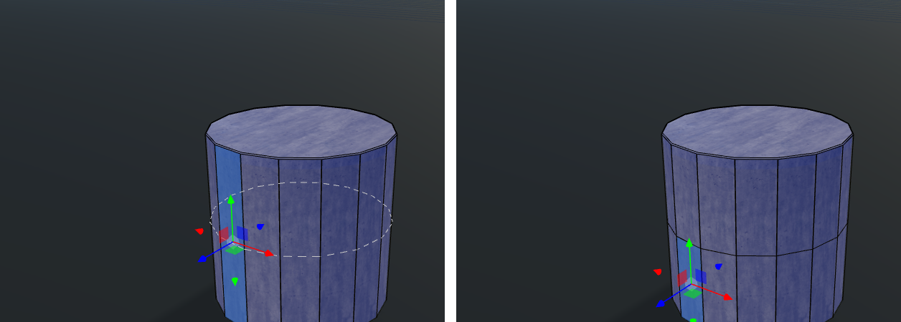
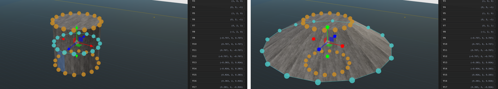

Brush Editing Guide
The short answer
Face mode and edge mode differ in what a click picks, not in what gets cut. In face mode (2) you pick a flat panel of the brush; in edge mode (4) you pick one of the lines where two panels meet.
An edge is already a cut: it's the seam between two faces. So edge mode never cuts along the edge you picked. Its buttons use that edge as a pointer:
- SPLIT EDGE adds a corner in the middle of that line. No new line appears; the two faces beside it just gain a corner each.
- LOOP CUT cuts across the edge: it slices the faces on both sides of it and keeps going around the shape. The new line crosses your edge at its middle.
- SELECT LOOP (or double-click) runs along the edge: it selects every corner on the line that continues straight on from it.
Every cut in the brush editor cuts faces. Face mode says "cut this face"; edge mode says "cut the faces this edge runs between". On a cylinder, pick a vertical side edge and LOOP CUT gives a horizontal ring, because the ring has to cross that edge.
The three parts of a brush
Every brush is made of the same three things, and each select mode picks one of them.
Faces are the panels you see and texture. Edges are the seams between them; each edge belongs to exactly two faces. Corners are where edges meet. A 16-sided cylinder has 32 corners, 48 edges and 18 faces (16 sides plus the two round caps).
The four select modes
The number keys 1 to 4 choose what a click on the selected brush picks; the gizmo and the panel buttons then act on that pick. In Edit Brush, a bar at the top left (Object · Face · Vertex · Edge) switches mode in one click. Its background is dark by default: change it (a color, the procedural sky or any skybox) on the brush's Brush View screen in the right panel.
| Key | Mode | A click picks | Dragging the gizmo moves | Panel buttons |
|---|---|---|---|---|
| 1 | Object | The whole brush | The whole shape (T/R to rotate) | Convert to Brush, Edit Brush |
| 2 | Face | One face (blue overlay) | That face, with its corners | SPLIT H / V, LOOP CUT H / V, INSET, EXTRUDE, RECESS, FLIP FOLD, per-face material |
| 3 | Vertex | One corner (a sphere); Shift-click adds or removes corners | One corner, or all selected corners together (T/R/S) | Corner x/y/z; with 2+ corners MOVE / ROTATE / SCALE, CLEAR SELECTION |
| 4 | Edge | The edge nearest where you clicked on a face (blue tube) | The edge's two corners | SPLIT EDGE, LOOP CUT, SELECT LOOP, AROUND FACE n; double-click = SELECT LOOP |
In every mode, Alt while dragging turns snapping off, Esc cancels a drag, and Cmd+Z undoes a whole drag or button press in one step.
What edge mode cuts, if not faces
It does cut faces. The edge you pick decides which faces and in which direction, and each button reads it differently.
- Across vs along. LOOP CUT treats your edge as a rail it has to cross, so its new line runs at right angles to the edge. SELECT LOOP treats your edge as the first step of a line and follows it. Same edge, perpendicular results.
- Why a vertical edge gives a horizontal ring. On a cylinder, the vertical side edges are the rails. A loop cut crosses each rail once at its middle, so the new vertices land at half height, all the way round.
- Face mode gets there too. LOOP CUT H on a side face makes the same horizontal ring; the face and the H / V choice replace the edge as the pointer.
- AROUND FACE n (one button per face the edge borders) selects the corners around the flat area on that side instead: on a plain cube's top-front edge, the top's outline or the front's. A flat area is every connected face in the same plane, so a top split into pieces still gives the whole top's outline. Hovering the button lights up that face.
- SPLIT EDGE is the only one that works on the edge itself. It adds a corner to the existing seam. The faces on both sides gain that corner but no new edge crosses them, so they become five-sided.
Every operation, before and after
Six buttons change a brush's shape; all but SPLIT EDGE work on faces, and all are one undo step.
| Button | Mode | What it does | Faces added |
|---|---|---|---|
| SPLIT H / V | Face | Cuts the face in two between the middles of two opposite sides; neighbours gain the new corners so no gap opens | 1 |
| LOOP CUT H / V | Face | The same split, repeated around the shape until the ring closes or reaches a face that isn't four-sided | 1 per face crossed |
| LOOP CUT | Edge | The ring that crosses the picked edge | 1 per face crossed |
| INSET | Face | Shrinks the face 0.25 m inward and surrounds it with a border of four-sided faces | 1 per corner (4 on a square) |
| EXTRUDE / RECESS | Face | Moves the face out or in by DIST (0.25 m unless changed) and fills the gap with side faces | 1 per corner |
| PUSH (gizmo mode) | Face | Drag the green cube: the selected face(s) move out or in along their own directions, any distance, no new faces (neighbours stretch) | 0 |
| SPLIT EDGE | Edge | A corner in the middle of the picked edge; both faces beside it gain it | 0 |
| FLIP FOLD | Face (bent, four-sided) | Creases the face along its other diagonal | 0 |
| SELECT LOOP / AROUND FACE n / SELECT RING | Edge / Edge / after a loop cut | Selects corners to move, rotate or scale; changes nothing by itself | 0 |
SPLIT and LOOP CUT need a face with four real corners. A point sitting straight along a side (left there by a neighbour's split) doesn't count as a corner.
Walkthrough: a bulge around a cylinder
Five steps turn a plain cylinder brush into a bulged one; the screenshots are from the editor on a 16-sided cylinder.
- Select the cylinder, press 2 (Face mode) and click one of its side faces.
- Hover LOOP CUT H: a dashed ring shows where the cut will go. Click it: the ring becomes real edges, and the panel says "Cut 16 faces, ring closed."
- Click SELECT RING next to that line. The editor switches to vertex mode with the 16 new corners selected, drawn in cyan and joined by a cyan line.
- Press S (or the SCALE button) and drag the gizmo's center box: right or up grows the ring, left or down shrinks it. The colored end boxes scale along one axis only.
- T moves the ring (up and down gives a higher or lower bulge), R tilts it. Each drag is one Cmd+Z.


A ring stops early, and the note says where, when it reaches:
- a face that isn't four-sided (a cylinder's round cap, a triangle);
- a face whose side doesn't line up with the ring, because it was split differently;
- a point where an earlier split already meets the ring's path.
That's why LOOP CUT V on a cylinder side cuts only that one column: it runs up the side and stops at both caps.
Several faces at once
Face mode can hold several faces, and the face buttons then act on them as one piece. Drawings of each: Face Set Operations.
- Selecting: Shift+click faces (in the view or the FACES list) to add or remove them; FACE LOOP H / V or a double-click selects the whole ring of faces through a face, e.g. every side of a cylinder.
- Material and TILE in the "N FACES SELECTED" card apply to every selected face ("(mixed)" when they differ).
- INSET puts one 0.25 m border round the outside of the selection, none between its faces: a 2 × 2 patch then RECESS makes one window; a cylinder band then RECESS makes one groove.
- EXTRUDE / RECESS move the selection by DIST (0.25 m unless changed) as one piece: each face moves straight out (or in) along its own direction and grows (or shrinks) to stay joined, so a cylinder band becomes a thicker (or thinner) ring. Side walls appear only round the selection's outer edge.
- A recess that would turn faces inside out is refused: the brush stays as it was and the card says why.
- The gizmo moves every selected face together. SPLIT, LOOP CUT and FLIP FOLD work on one face at a time.
- GIZMO: MOVE / PUSH. MOVE slides the selection one way with the arrows. PUSH swaps them for a green cube: drag it right or up to push every selected face out along its own direction, left or down to pull them in (0.05 m steps, Alt for free). The panel says how far it went, or where it stopped if going further would turn faces inside out.
- EXTRUDE / RECESS DIST sets how far those two buttons go (0.25 m by default), for one face or many.
Bent faces and folds
A four-sided face whose corners stop lying flat has to crease along one of its two diagonals; the editor picks the one that bulges outward, and FLIP FOLD picks the other.
- Why it creases. The screen draws every face as triangles, and a four-sided face is two triangles sharing a diagonal. While the face is flat that diagonal is invisible; once a corner moves off the plane, the face bends along it.
- The automatic choice. Pull a corner out and the crease runs through it (the tent above). Push it in and the crease runs beside it instead, giving a diamond-shaped dent. Flat faces look exactly as before.
- FLIP FOLD (Face mode, only on a bent four-sided face) switches that face to its other diagonal. The selected face shows its crease as a white dashed line, and the note under the buttons says "automatic" or "flipped". Flipping back to the automatic one clears the override.
- The texture shows it more than the shading. Each face keeps one lighting direction, so the crease is easiest to see where the texture's grid lines bend.
- Faces with five or more corners (from an earlier SPLIT next door) keep the plain crease, and FLIP FOLD is greyed out on them.
Quick reference
The same list lives in the top bar's ? menu under BRUSH EDITING; inside Edit Brush that menu shows only camera and brush controls.
| Input | Where | Does |
|---|---|---|
| 1 2 3 4 | Any brush | Object / Face / Vertex / Edge mode |
| Click | Face, Vertex, Edge mode | Picks a face / corner / nearest edge |
| Shift+click a corner | Vertex mode | Adds or removes it from the selection |
| Double-click an edge | Edge mode | Selects every corner along its line |
| Shift+click a face | Face mode | Adds or removes it from the selection |
| Double-click a face | Face mode | Selects its face loop (the ring of faces through it) |
| Drag the gizmo | Any mode | Moves the pick (snaps 0.25 m) |
| Drag the green cube | Face mode, GIZMO PUSH | Pushes the selected face(s) out / in along their own directions (snaps 0.05 m) |
| T R S | 2+ corners selected | Move / rotate / scale them together (snaps 0.25 m / 15° / 0.1) |
| Alt (held) | While dragging | No snapping |
| Esc | While dragging | Cancels, puts everything back |
| Right-click a corner | Vertex mode | Deletes it (a brush keeps at least 4) |
| Cmd+Z / Cmd+Shift+Z | Anywhere | Undo / redo one drag or button |
| Edit Brush | Object mode panel (Geometry or Actions) | Opens the brush alone. In the amber bar, Save (or Cmd+S) keeps you editing; Close exits, and asks first if there are unsaved changes. Everything saved lands on the brush as one undo step. |